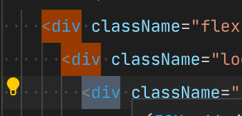
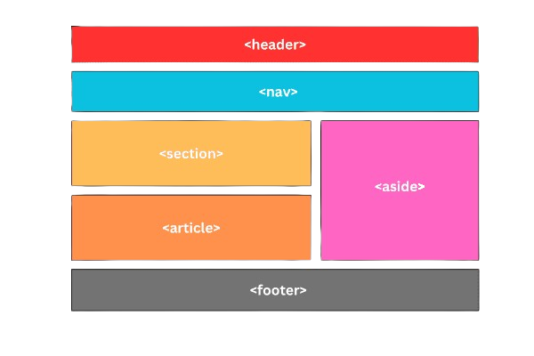

A arte do HTML: O segredo para um SEO imbatível
Ao desenvolver uma página web, o foco n ão deve estar apenas no aspecto visual, mas também
na
forma como o conteúdo é estruturado e interpretado por diferentes agentes, como motores de
busca, leitores de tela e outros desenvolvedores. Nesse contexto, o HTML semântico
desempenha um papel fundamental, pois fornece significado e propósito aos elementos da
página. Diferentemente do uso excessivo de <div>s genéricos, a semântica
permite criar documentos mais claros, organizados e alinhados com as boas práticas da web
moderna.
Durante muito tempo, a web foi dominada pelo uso excessivo de <div>s para
qualquer tipo de agrupamento, um fenômeno conhecido na comunidade como "Divitis". Embora
visualmente funcional, essa prática cria um código "mudo", onde nada tem hierarquia ou
importância definida. Ao adotar tags semânticas, o desenvolvedor estabelece uma comunicação
clara com o navegador. Por exemplo, ao usar <main>, você sinaliza
explicitamente onde está o valor real da página, permitindo que ferramentas de busca e
tecnologias assistivas ignorem ruídos laterais e foquem no que o usuário realmente deseja
consumir.

Aqui estão algumas das principais tags semânticas e seus usos:
<header>: Representa o cabeçalho da página ou de uma seção. Geralmente, contém o logotipo e o menu de navegação.<nav>: Agrupa os links de navegação principais, como menus ou barras laterais de navegação.<main>: Define o conteúdo principal da página, que deve ser único e central.<article>: Indica um conteúdo autossuficiente e independente, como um post de blog ou uma notícia.<aside>: Inclui conteúdos relacionados, como uma barra lateral com links ou anúncios.<footer>: O rodapé da página, onde geralmente estão informações como direitos autorais e contatos.<section>: Agrupa seções temáticas dentro de um documento, ideal para dividir o conteúdo de forma lógica.

Um dos principais benefícios do HTML semântico está relacionado à acessibilidade. Tecnologias
assistivas, como leitores de tela, dependem de uma hierarquia bem definida para guiar
usuários com deficiência visual durante a navegação. Sem tags estruturais, o leitor de tela
processa a página de forma linear e confusa; com elas, o usuário pode saltar diretamente
para o menu de navegação (<nav>) ou para a seção de conteúdo principal,
garantindo uma experiência inclusiva e eficiente.
Em última análise, escrever HTML Semântico é um exercício de empatia e responsabilidade técnica. Adotar esses padrões significa reconhecer que a web é diversa e que seu código deve estar preparado para ser lido em qualquer dispositivo, por qualquer pessoa ou algoritmo. Ao revisar seus projetos e substituir blocos genéricos por elementos significativos, você não está apenas otimizando o carregamento ou o ranqueamento, mas contribuindo para uma internet mais democrática e perene.